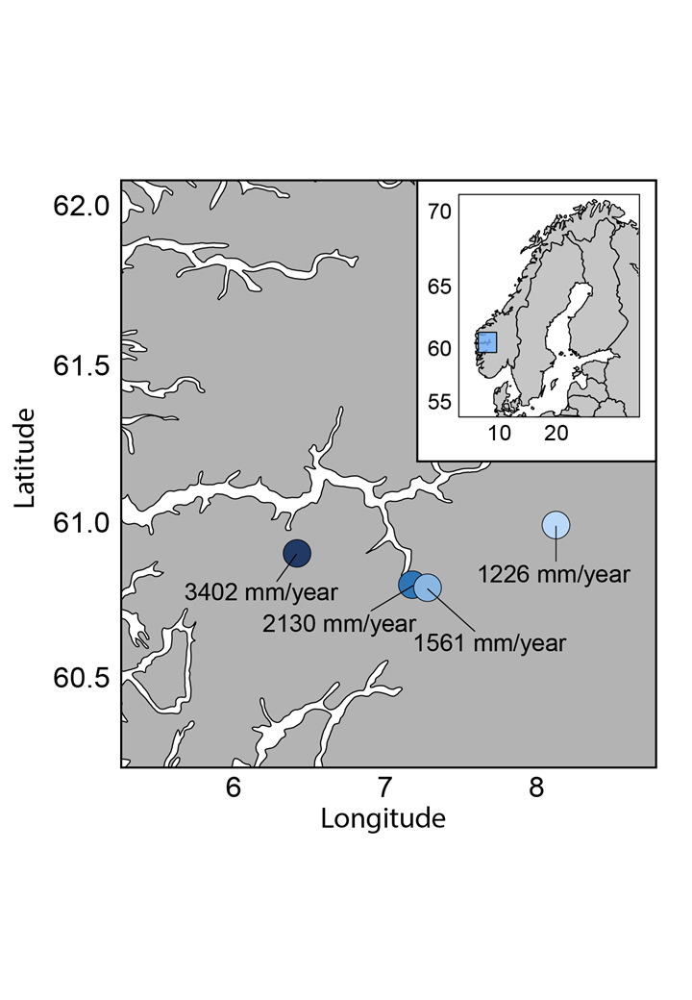
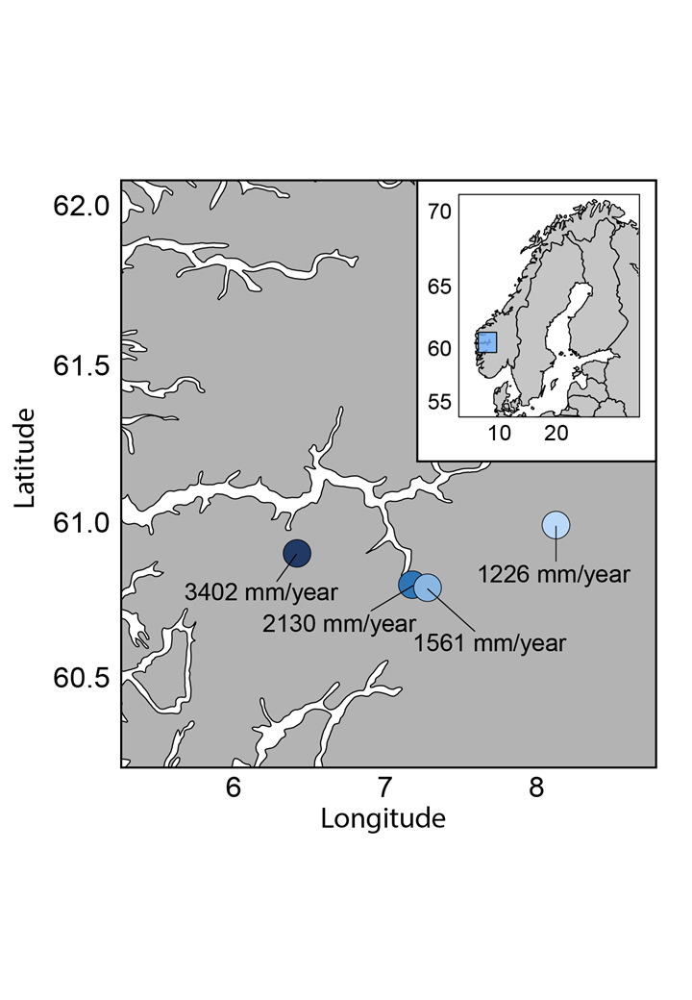

4 INCLINE project
The aim of the INCLINE project is to disentangle the indirect and direct effects of climate change on alpine plant communities within an ecologically realistic field setting. To achieve this INCLINE combines warming, vegetation removal, and transplant treatments. For the PFTC we will focus on the impact of warming upon alpine grassland communities.
4.1 Study sites
The INCLINE experiment was set up in four semi-natural alpine grasslands selected to represent a precipitation gradient from the continental, dry inland to the oceanic, humid coast. The sites are part of an established climate grid (Vandvik, V. , and the Vestland Climate Grid and SeedClim Project Teams, year = 2022, n.d.; Klanderud, Vandvik, and Goldberg 2015; Vandvik et al. 2020).

INCLINE uses the four alpine sites of the VCG which span an annual precipitation gradient of 700mm. The sites were chosen to reflect grassland vegetation along broad-scale climate gradients, while keeping all other underlying factors similar (i.e. slope, aspect, soil pH, soil type, semi-natural grassland vegetation, and grazing history). The target vegetation type was forb-rich semi-natural alpine grassland vegetation (Klanderud, Vandvik, and Goldberg 2015), within the plant sociological association Potentillo-Festucetum ovinae tending towards Potentillo-Poligonium vivipara in the alpine sites (Fremstad 1997). All sites were moderately grazed prior to the study by sheep, cattle, goats, reindeer, deer, and/or moose. These plots were also fenced, but not mowed to ensure highest possible success for the transplanted sub-alpine species of the experiment.
4.2 Experimental treatment
Study setup and plot selection Over the summer of 2018, we selected 1-3 experimental areas of ca. 75 – 200 m2 at each site, targeting homogeneous and representative parts of the target grassland vegetation at large at that site. The experimental areas were placed on southerly-facing slopes, avoiding depressions in the landscape and other features such as big rocks or formations that may affect light conditions, hydrology and/or snowdrift. The target vegetation type was forb-rich semi-natural upland grassland vegetation. The most common vascular plants across sites, based on sum of covers, are Agrostis capillaris, Agrostis mertensii, Alchemilla alpina, Anthoxanthum odoratum, Bistorta vivipara, Deschampsia cespitosa, Nardus stricta, Salix herbacea, and Viola biflora. The experimental areas were fenced for the duration of the study to prevent animal and human disturbance of the experimental infrastructure. For further description of the sites, see Klanderud et al. (2015) and for access to and further description of site-level data, see Vandvik et al. (2020).
Block and experimental plot setup At each site, we established seven blocks, with a distance between the blocks ranging from 1-250 meters. Blocks were selectively placed in homogenous grassland vegetation that contained the two alpine focal species, avoiding rocks, depressions, and other features as described above. Each block consists of two clusters of two or three 25 x 35 cm plots, placed so that each cluster could fit within a hexagonal open-top chamber with a diameter of 1.5 m (see below). We carefully selected the plots to ensure they contained the target vegetation type (see study site selection).
Experimental design The INCLINE experiment includes a warming treatment using Open Top Chamber (OTCs). OTCs generally increase the temperature within a plot by 1-2 degrees during sunny days. At each site, there are seven blocks of paired OTCs and control plots.
To test the effect of warming we installed hexagonal open-top chambers with a diameter of 1.5 meters, following the ITEX protocol (Marion 1996). They were installed within the first two weeks after snowmelt (late May to mid June) in 2019. The OTCs were then removed every fall in late September/ early October to avoid damage due to the thick snowpack at our sites during winter. In the spring the OTCs were installed again as soon as possible, usually within one–three weeks after snowmelt. In the first year (2019) we installed the OTCs in late May for the sites that melted out first (Ulvehaugen and Gudmedalen) and in early June for the sites that melted out later (Låvisdalen and Skjellingahaugen). In 2020 the snowmelt was later than usual and the OTCs were installed in late June for the early snowmelt sites and in early/mid July late snowmelt sites. It was a relatively normal snowmelt year in 2021, hence the OTCs were again installed in mid June.

4.3 References
Fremstad, E. 1997. “Norwegian Vegetation Types.” NINA Temahefte.
Klanderud, Kari, Vigdis Vandvik, and Deborah Goldberg. 2015. “The Importance of Biotic Vs. Abiotic Drivers of Local Plant Community Composition Along Regional Bioclimatic Gradients.” PLoS One 10 (6): e0130205.
Marion. 1996. “Temperature Enhancement Experiments.” ITEX Manual.
Vandvik, V. , and the Vestland Climate Grid and SeedClim Project Teams, year = 2022. n.d. “Data Repository for the Vestland Climate Grid and the SeedClim Experiments.”
Vandvik, Vigdis, Olav Skarpaas, Kari Klanderud, Richard J Telford, Aud H Halbritter, and Deborah E Goldberg. 2020. “Biotic Rescaling Reveals Importance of Species Interactions for Variation in Biodiversity Responses to Climate Change.” Proc. Natl. Acad. Sci. U. S. A. 117 (37): 22858–65.